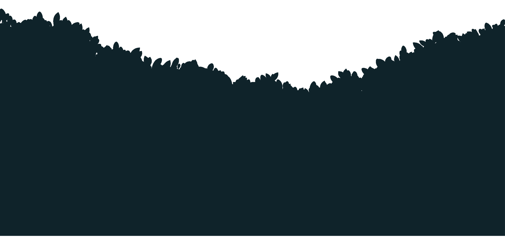
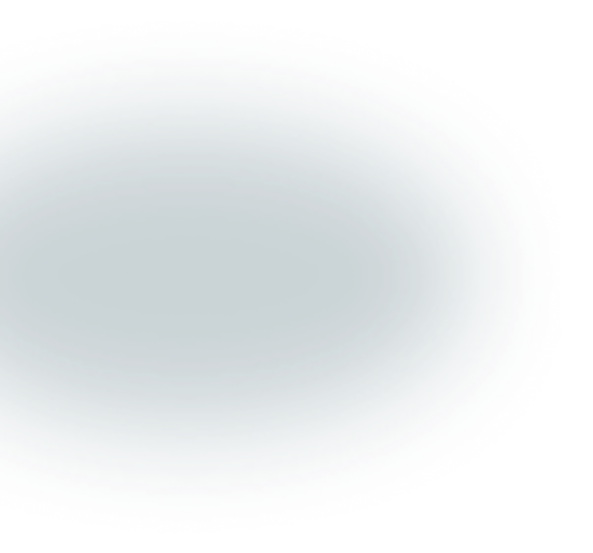
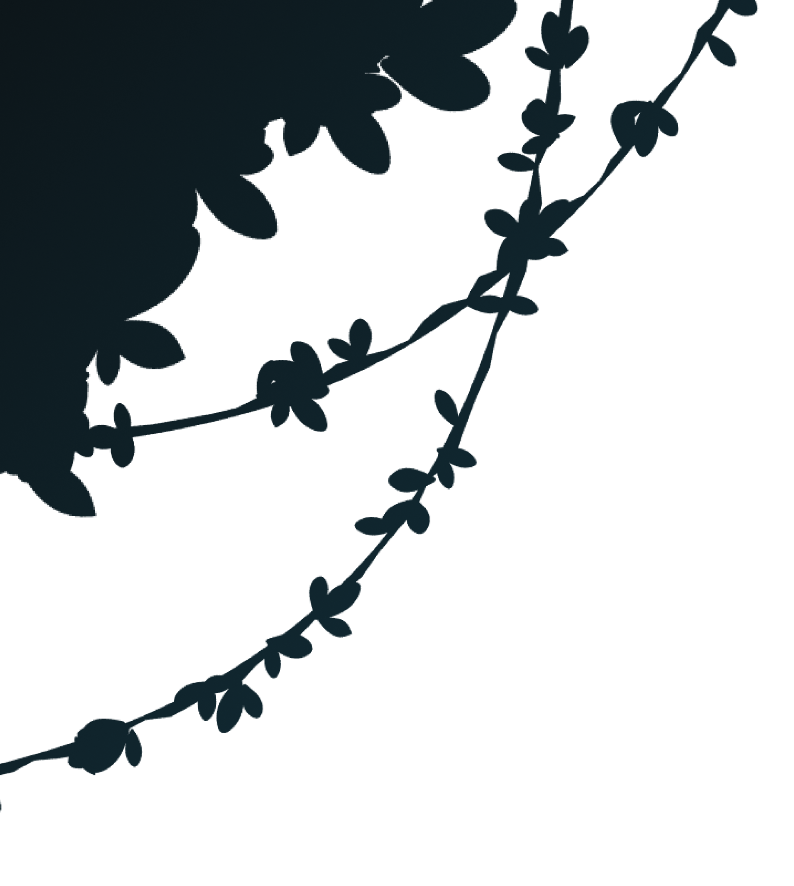
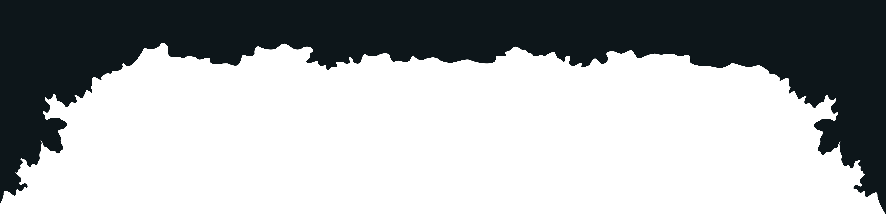
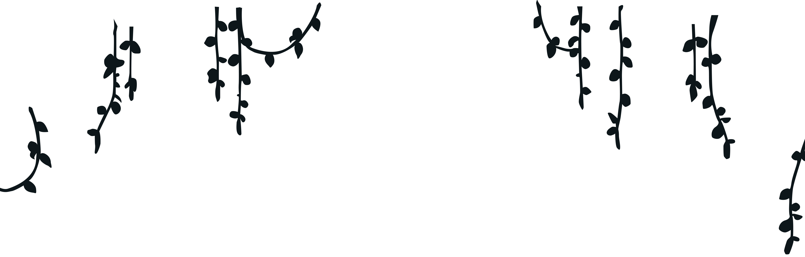
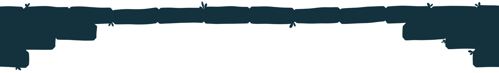
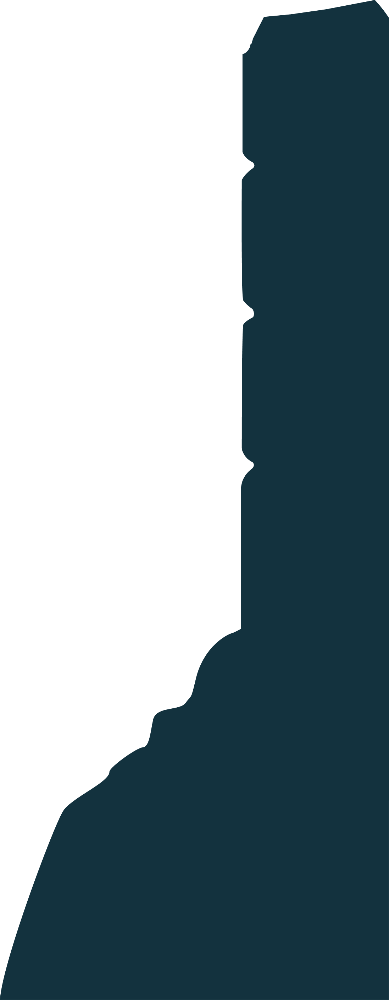
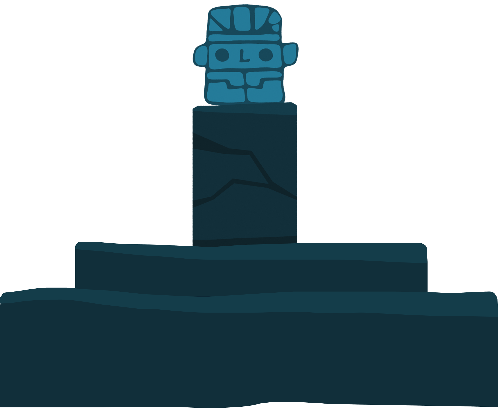
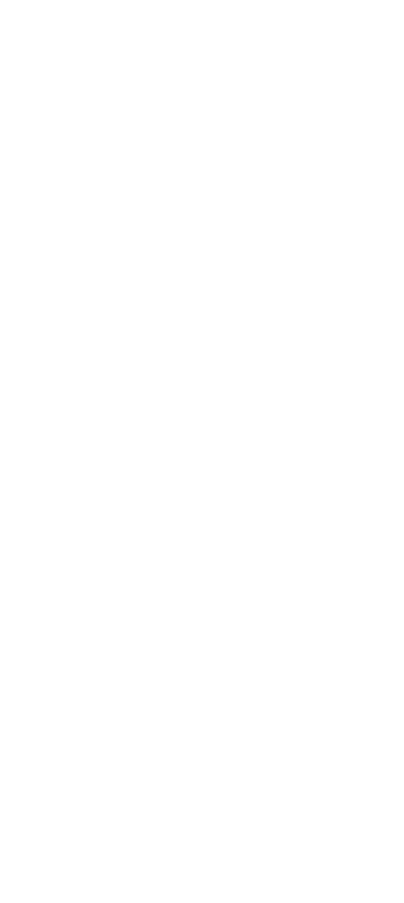

EST. 2026
Scroll ↓
Berlin / Remote









Dive deeper
and discover the boundless world
of 3D Animation.
Tumbling Totem creates visuals for your project, endless possibilities tailored to your needs.
Explore ↓


Featured Works
HOLD AND
DRAG
DRAG
INDEX.01 // recovery
oct '24
Forest Scene
INDEX.02 // mystic
oct '24
Mystic Garden
INDEX.03 // ancient
oct '24
Ancient Path
More Works
HOLD AND
DRAG
DRAG
INDEX.01 // recovery
oct '24
Forest Scene
INDEX.02 // mystic
oct '24
Mystic Garden
INDEX.03 // ancient
oct '24
Ancient Path










GET IN TOUCH
tumblingtotem@gmail.com